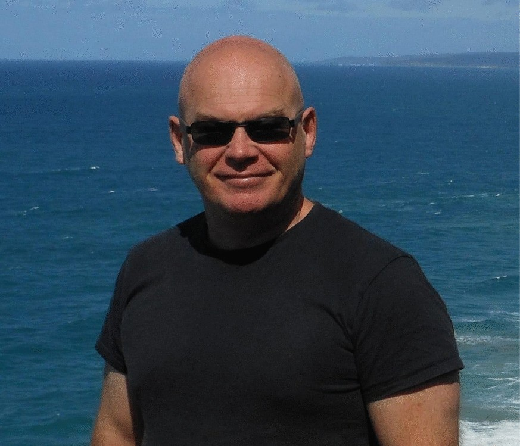

Euan Kevin James
1962–2026
Pesquisador Líder · The James Hutton Institute
Dundee, Escócia, Reino Unido
- Fixação biológica de nitrogênio
- Simbioses leguminosa–rizóbio
- Beta-rizóbios em Mimosa
- Diazotróficos endofíticos
- Microbioma vegetal
- Anatomia de nódulos radiculares
Sobre
Euan James graduou-se em Ciências Agrárias e Ambientais pela Universidade de Newcastle upon Tyne e obteve o doutorado pela Universidade de Dundee (1990), com tese sobre barreiras à difusão de oxigênio em nódulos radiculares de leguminosas. Ingressou no The James Hutton Institute (Escócia) em 2008 como microscopista eletrônico consultor e, desde 2017, atuava como Pesquisador Líder em interações benéficas planta–bactéria. Durante cerca de 20 anos, foi Section Editor da revista Plant and Soil, além de integrar conselhos editoriais de outras publicações científicas. Faleceu em 30 de abril de 2026, em casa, em paz.
Sua pesquisa dedicou-se à fixação biológica de nitrogênio e às simbioses entre leguminosas e rizóbios, com ênfase nos beta-rizóbios dos gêneros Burkholderia e Cupriavidus associados a espécies de Chamaecrista, nos diazotróficos endofíticos de cana-de-açúcar e cereais, e na aplicação de leguminosas para a agricultura sustentável. Sua colaboração com o LIPA articulava-se em torno das bases fisiológicas e ecológicas das simbioses mutualistas em Chamaecrista, integrando a perspectiva microbiológica e de anatomia nodular ao enfoque ecológico do laboratório.
